| LTTng Tracer Control | ||
|---|---|---|
|
|
|
|
| LTTng Perspective | Limitations | |
The LTTng Eclipse integration supports LTTng Tracer toolchains version v0.x as well as the version v2.0 (or later).
The LTTng Tracer toolchains version v0.x requires and LTTng agent running on the remote host. The functions to control the LTTng tracer (e.g. start, pause, resume), either locally or remotely, are available from the Remote Systems view (See Remote Systems View, an RSE view).
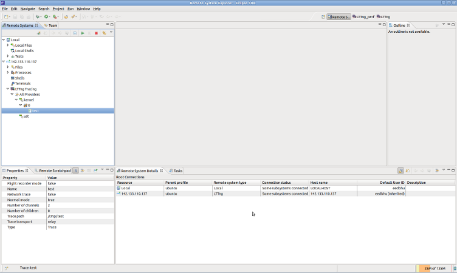
The LTTng tracer is controlled by the UI through an LTTng agent running on the tracer system.
A new connection to a remote system can be created using the new connection wizard of the Remote System Explorer. For this, a toolbar button exists on the top left corner of the Remote System view. Alternatively, this wizard can be started using File -> New -> Other ... -> Remote System Explorer -> Connection).
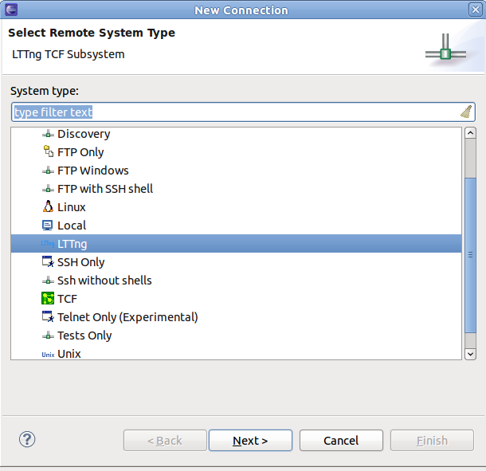
For LTTng control, select connection type LTTng and press Next to define the connection.
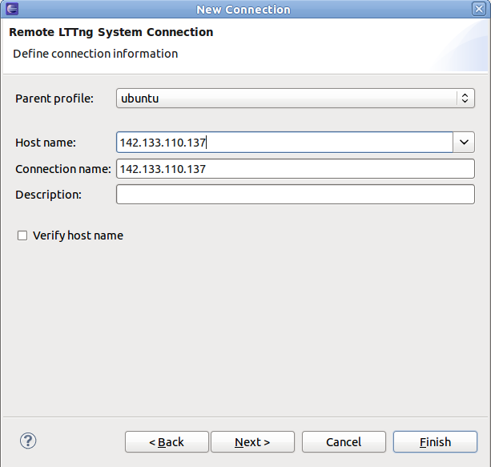
The Host name holds the IP address or DNS name of the remote system. The Connection name is the name to be displayed in the Remote Systems view. The Description is optional. Unless the user wants to use a specific Profile, the default profile is sufficient. The checkbox Verfiy host name enable or disables the verification of the remote system.
By default, when pressing "Finish" the new connection contains the following sub systems:
The user has the possibility to configure or omit the subsystems Files, Processes, Shells and Terminals by pressing "Next" and deselecting the relevant subsystem.
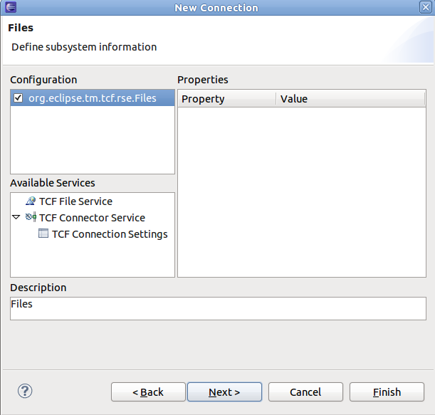
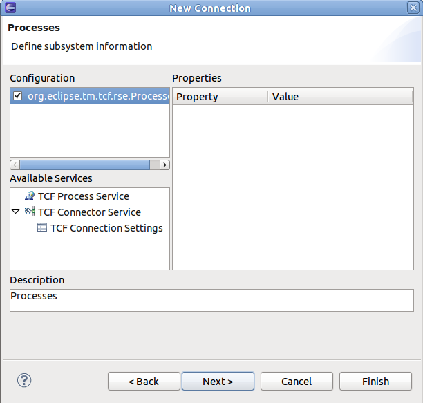
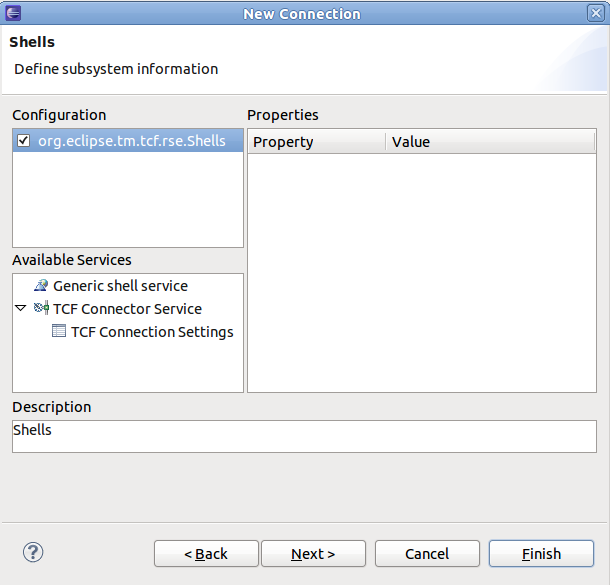
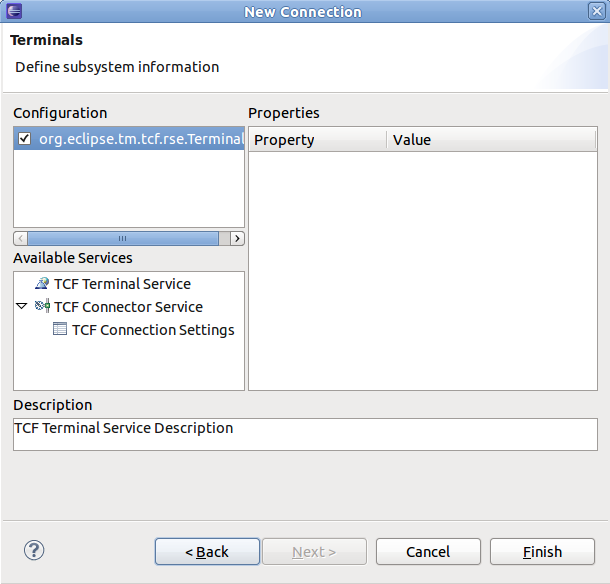
After finishing the new connection the Remote System view will be updated:
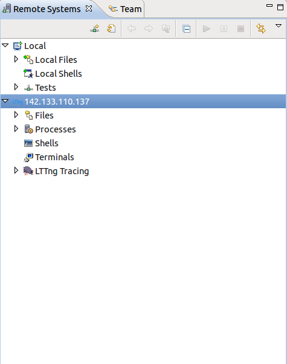
All actions are on elements in the Remote Systems view are accessible through context sensitive menu. By selecting a tree element and pressing the right mouse button a context sensitive menu is shown. Some of the actions are also available through toolbar buttons and toolbar menu.
The connection to the remote host can be established by selecting the connection in the tree, click the right mouse button and select Connect.
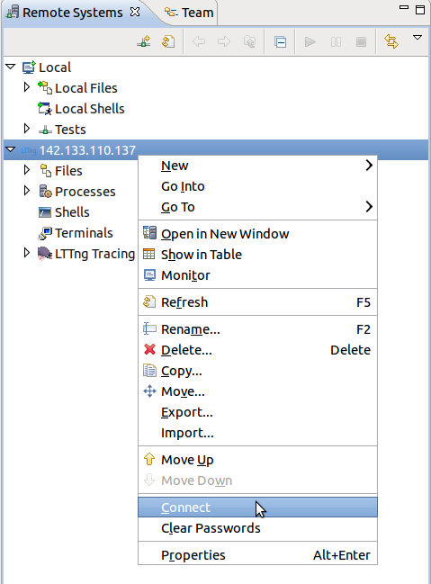
A login dialog will be opened, where the user needs to specify the user name and password.
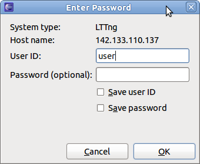
After logging in the LTTng Trace Control will retrieve LTTng Remote System information. First it will read the supported providers. The providers will be one or both of the following: "kernel" for kernel tracing and "ust" for user space tracing. After that the trace controls reads the currently available targets. For kernel tracing, there is only one target with ID "0". For user space tracing each target is the corresponding process ID of a user space application with user space tracing enabled. Without any traces created the Remote System view will look like this (after expanding the tree):
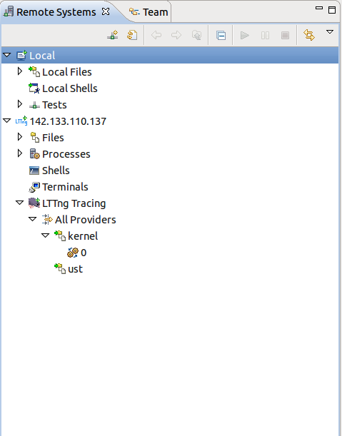
The marker of a given target can be configured by selecting the kernel target "0", clicking the right mouse button and selecting the Configure Markers menu item of the context sensitive menu.
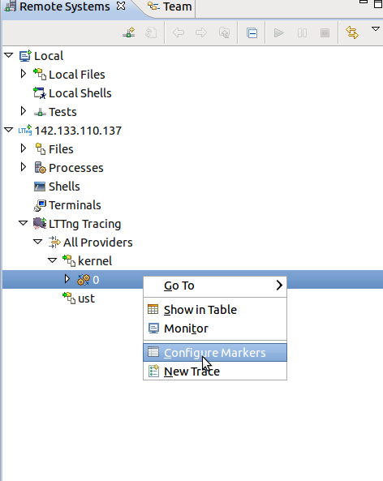
A new dialog box will show for the configuration of the relevant markers. All markers are listed in a table. The first column contains a checkbox to enable or disable a marker. The second column shows the name of the marker and all other columns display marker details.
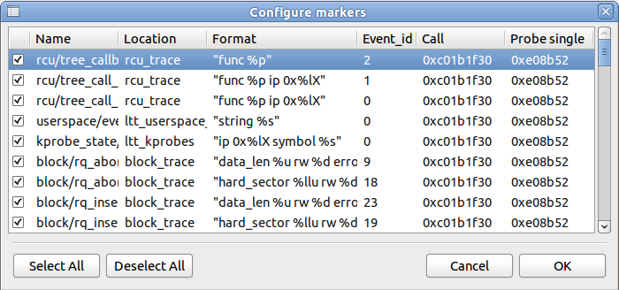
A new trace can be created by selecting the kernel target "0", clicking the right mouse button and selecting the New Trace menu item of the context sensitive menu.
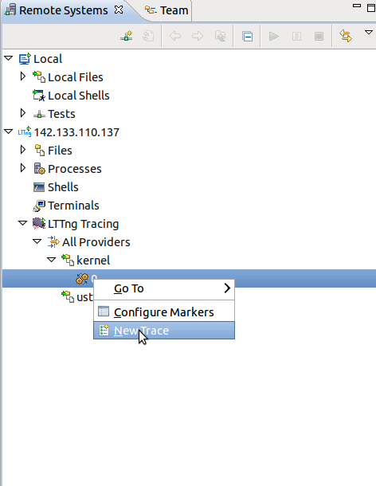
A new dialog box will show for the configuration of the relevant parameter.
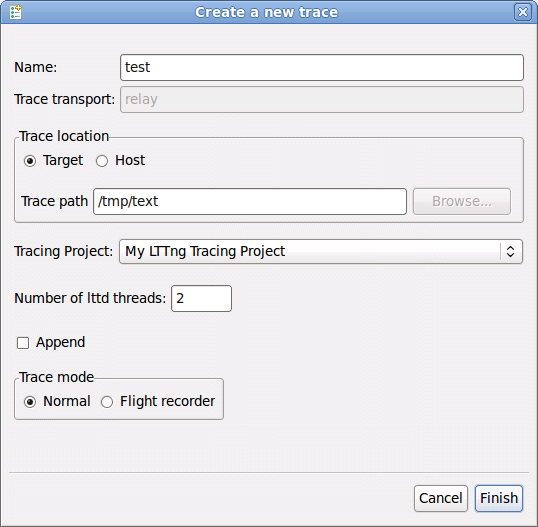
If all inputs are valid the Finish button will be active and can be used to create the trace. The LTTng trace control will setup the trace using the connection to the remote agent.
After creating a new trace, the Remote Systems view will be updated. When selecting the newly created trace in the tree, the buttons to start, stop and configure the trace will be enabled.
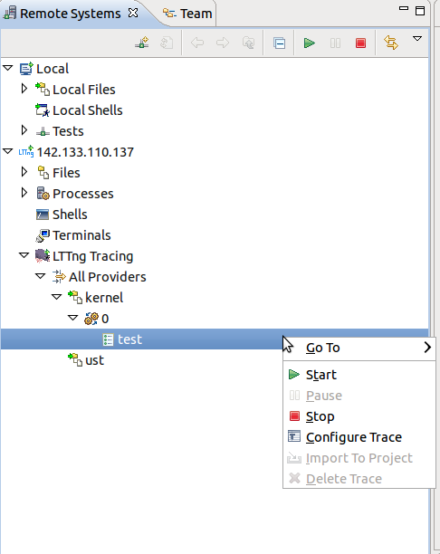
Some of the trace parameters can be changed if the trace has not been previously started. A trace can be configured by selecting the relevant kernel trace, clicking the right mouse button and selecting the "Configure Trace" menu item of the context sensitive menu.
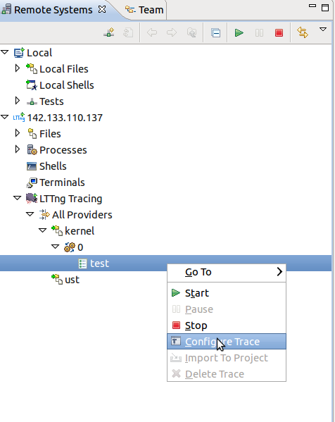
A new dialog box with a wizard page will show for the configuration of the relevant parameter. For explanation of the parameters see Create_a_New_Kernel_Trace
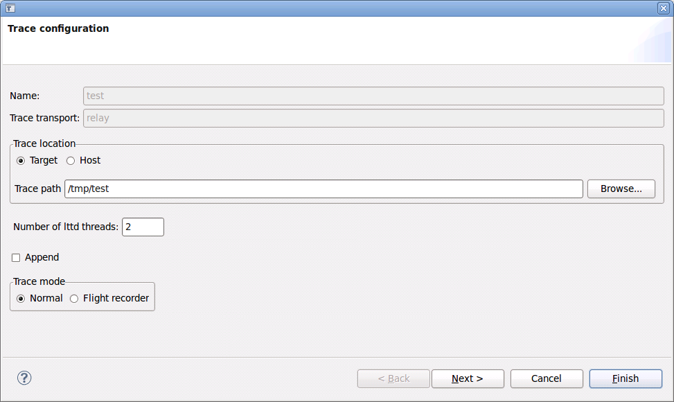
After entering valid parameters the Next and Finish buttons will be active. To finalize the configuration of the trace select the Finish button. To configure channel parameters select the Next button. A new wizard page will show for the configuration of channel parameters. For provider kernel the following display will show:
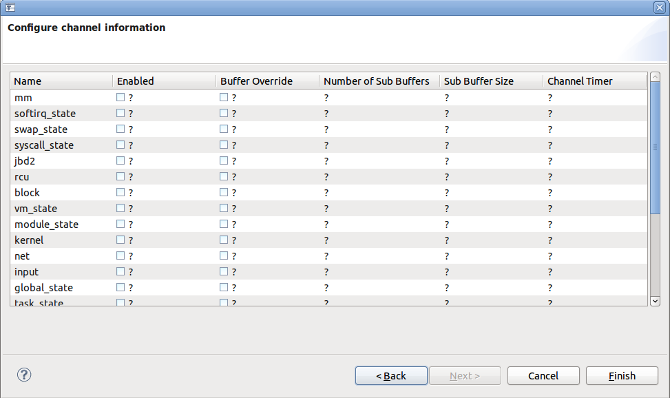
All channels can be configured at once by clicking the right mouse button in the table and selecting one of the menu items of the context sensitive menu.
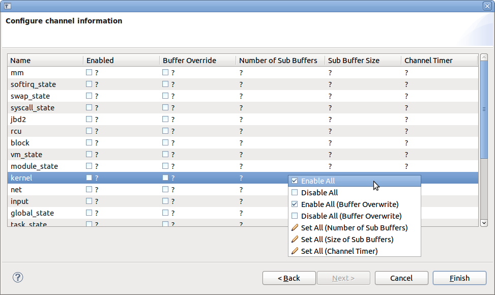
For provider ust only the channel parameter Channel Timer can be configured and the following display will show after selecting the Next button of the Trace configuration page.
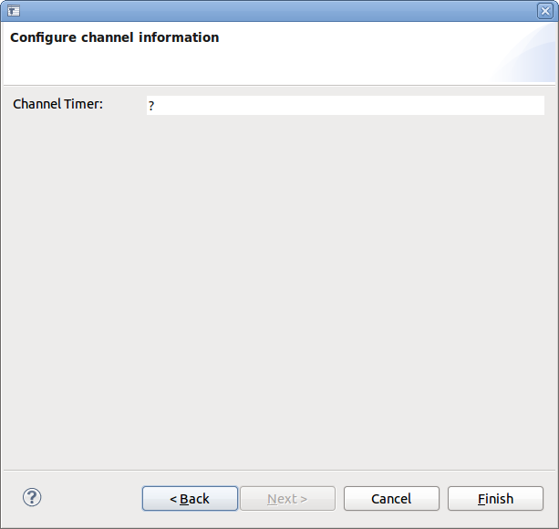
Please note that channel parameters cannot be retrieved from the LTTng agent. Therefore they cannot be displayed in the table unless they have been previously configured through Eclipse. However, this information will be lost after closing Eclipse. A question mark will indicate that the relevant value is not known and it will be ignored after selecting the Finish button.
Please note that the Configure Trace item of the context sensitive menu of a trace can be used to display the trace and channel parameters at any time. However, they can only be changed if the trace has not been previously started.
A configured or paused trace can be started by selecting the kernel trace, clicking the right mouse button and selecting the Start menu item of the context sensitive menu. Alternatively, the start button in the toolbar can be used to start the trace. If the trace location is host (streaming trace), it will be automatically added to the tracing project that was selected at trace creation.
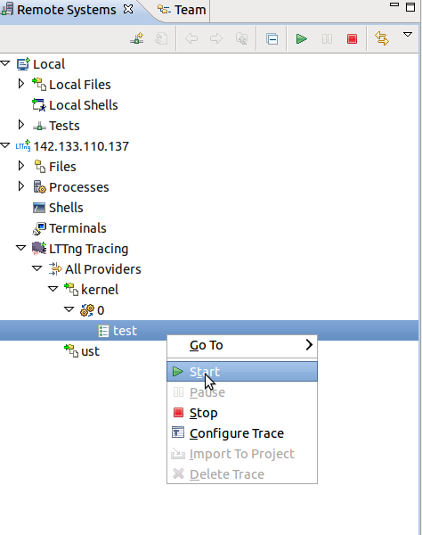
A started trace can be paused by selecting the relevant trace, clicking the right mouse button and selecting the Pause menu item of the context sensitive menu. Alternatively, the pause button in the toolbar can be used to pause the trace.
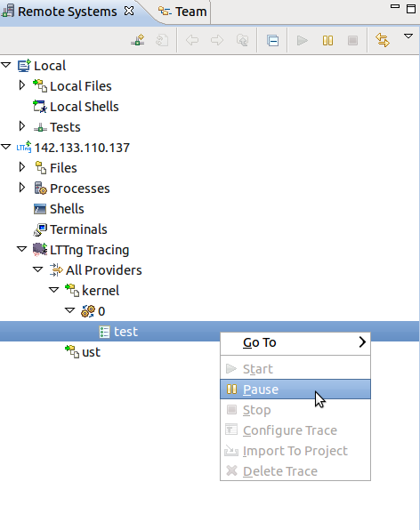
A non-started trace can be stopped by selecting the relevant trace, clicking the right mouse button and selecting the Stop menu item of the context sensitive menu. Alternatively, the stop button in the toolbar can be used to stop the trace. This will destroy the trace on the remote system, all allocated memory will be deallocated and all relevant trace files will be finalized. This step is need to be able to import a trace into the LTTng Perspective.
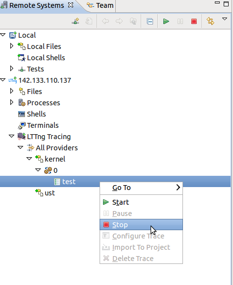
A streaming or stopped trace can be imported to the LTTng Perspective for viewing by selecting the relevant trace, clicking the right mouse button and selecting the Import To Project menu item of the context sensitive menu. A new dialog box will show to select the LTTng Project.
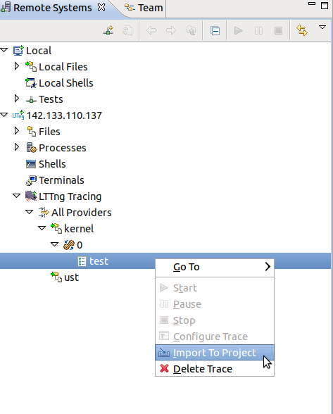
For local trace path (streamed to the host):
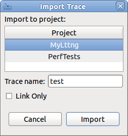
For remote trace path (stored on the target):
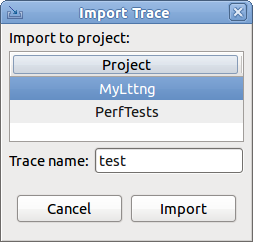
After pressing button Import the trace will be stored in the selected project. For a trace stored on the target, it will be downloaded from the remote system.
A stopped trace can be deleted by selecting the relevant trace, clicking the right mouse button and selecting the Delete menu item of the context sensitive menu. A new dialog box will show for the user to confirm that the selected trace should be deleted.
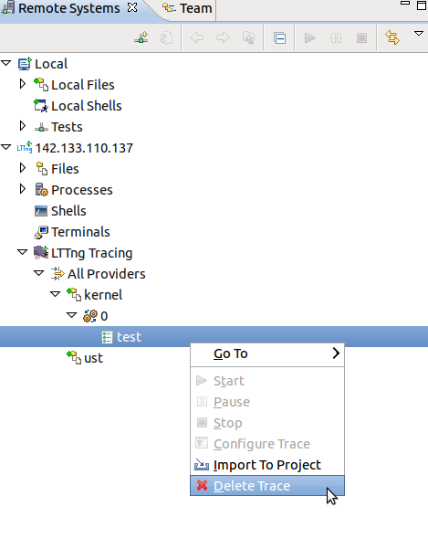
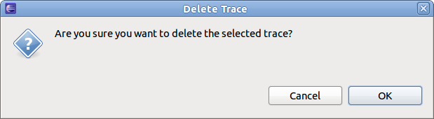
The Property view displays the properties of the selected resource in the tree. For traces it displays all configuration parameters.
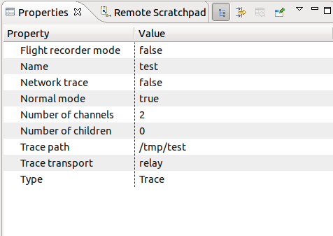
Note: This feature is not available yet but will be delivered soon.
The LTTng Tracer Control in Eclipse for the LTTng Tracer toolchain version v2.0 (or later) is done using SSH and requires an SSH server to be running on the remote host. For the SSH connection the SSH implementation of RSE is used. For that a new System Type was defined using the corressponding RSE extension. The functions to control the LTTng tracer (e.g. start and stop), either locally or remotely, are available from a dedicated Control View.
To open the Control View, select ' Window->Show View->Other...->LTTng->Control View.
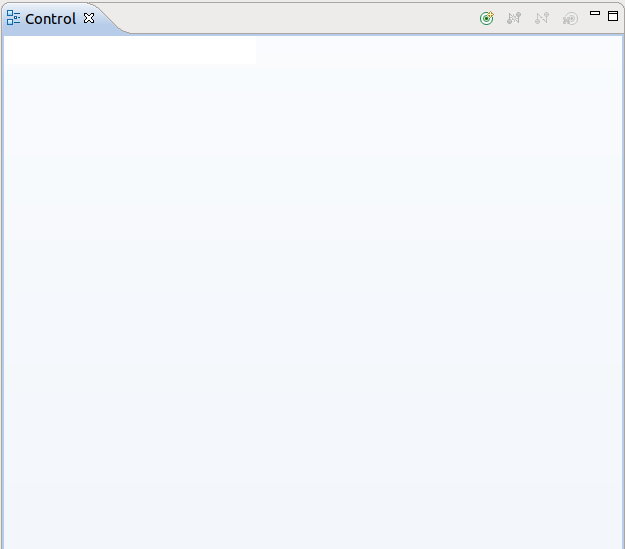
To connect to a remote host, select the New Connection buttion in the Control View.
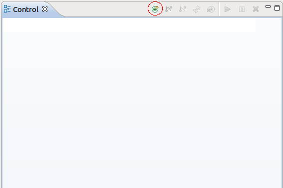
A new display will show for entering the remote host information. A drop down menu will filled with all existing host information which were used before. To enter the host information either select one of the hosts in the drop down menu or enter the host information manually.
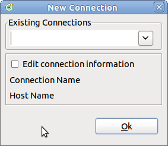
To use an existing connection definition, select the relevant entry in the drop-down menu and then select Ok.
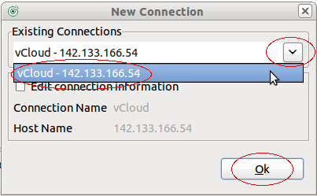
To enter the host information manually select first the button Edit connection information. Then the text fields Connection Name and Host Name will enabled. Enter the relevant information and then select Ok.
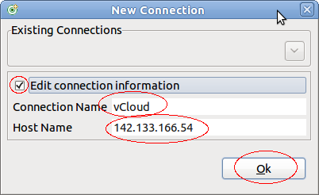
A new display will show for providing the user name and password. This display only opens if no password had been saved before. Enter user name and password in the Enter Password dialog box and select Ok.
The Host Name holds the IP address or DNS name of the remote system. The Connection Name is the alias name to be displayed in the Control View.

After pressing Ok the SSH connection will be established and after successful login the Control View implementation retrieves the LTTng Tracer Control information. This information will be displayed in the Control View in form of a tree structure.
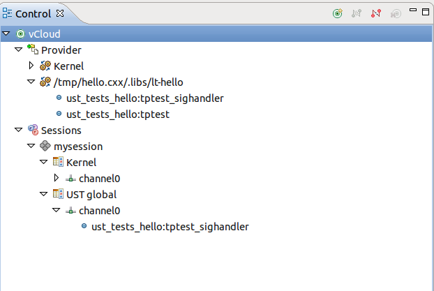
The top level tree node is the representation of the remote connection (host). The connection name of the connection will be displayed. Depending on the connection state different icons are displayed. If the node is
CONNECTED the icon is shown
 , otherwise (states
CONNECTING,
DISCONNNECTING or
DISCONNECTED the icon is
, otherwise (states
CONNECTING,
DISCONNNECTING or
DISCONNECTED the icon is
 .
.
Under the host level two folder groups are located. The first one is the Provider group. The second one is the Sessions group.
Under the Provider group all trace providers are displayed. Trace providers are Kernel and any user space application that supports UST tracing. Under each provider a corresponding list of events are displayed.
Under the Sessions group all current sessions will be shown. The level under the sessions show the configured domains. Currently the LTTng 2.0 Tracer Toolchan supports domain Kernel and UST global. Under each domain the configured channels will be displayed. The last level is under the channels where the configured events are displayed.
Each session can be
ACTIVE or
INACTIVE. Active means that tracing has been started, inactive means that the tracing has been stopped. Depending on the state of a session a different icon is displayed. The icon for an active session is
 . The icon for an inactive session is
. The icon for an inactive session is
 .
.
Each channel can be
ENABLED or
DISABLED. An enabled channel means that all configured events of that channel will be traced and a disabled channel won't trace any of its configured events. Different icons are displayed depending on the state of the channel. The icon for an enabled channel is
 and the icon for a disabled channel is
and the icon for a disabled channel is
 .
.
Events within a channel can be in state
ENABLED or
DISABLED. Enabled events are stored in the trace when passed during program execution. Disabled events on the other hand won't be traced. Depending on the state of the event the icons for the event is different. An enabled event has the icon
 and a disabled event the icon
and a disabled event the icon
 .
.
To disconnect from a remote host, select the host in the Control View and press the Disconnect button. Alternatively, press the right mouse button. A context-sensitive menu will show. Select the Disconnect button.
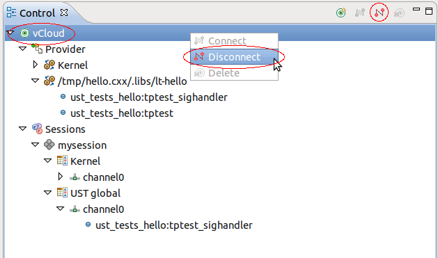
To connect to a remote host, select the host in the Control View and press the Connect button. Alternatively, press the right mouse button. A context-sensitive menu will show. Select the Connect button. This will start the connection process as discribed in Creating a New Connection to a Remote Host.
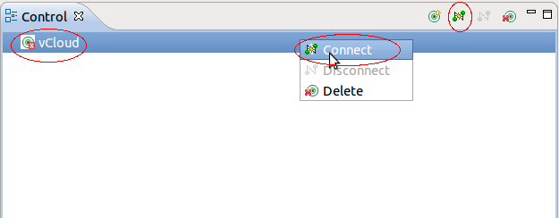
To delete a remote host connection, select the host in the Control View and press the Delete button. Alternatively, press the right mouse button. A context-sensitive menu will show. Select the Delete button. For that command to be active the connection state has to be DISCONNECTED.

The Control View provides property information of selected tree component. Depending on the selected tree component different properties are displayed in the property view. For example, when selecting the node level the property view will be filled as follewed:

List of properties:
|
|

|
|
| LTTng Perspective | Limitations |